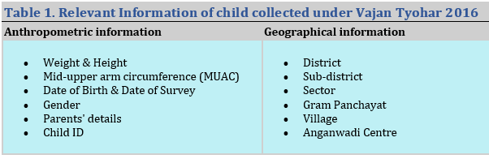
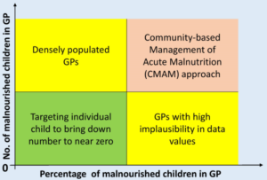

Children build the future human capital of a nation. As the cognitive and socio-economic development of the children are influenced by their nutritional status, improving child nutrition should be among the first priority of the country’s action, especially in India which has the highest number of malnourished children in the world. The Indian government has launched various welfare schemes and programmes (ICDS, IYCF, PDS, and MDM etc.) to tackle this problem. However, despite such initiatives, child malnutrition has not reduced significantly. The incidences of underweight and stunted children has not reduced more than 2.7% and 7.3% respectively while incidences related to wasting has increased slightly by 0.2% from NFHS-3 (2005-06) to NFHS-4 (2015-16). Failure of these interventions raises many questions over the efforts taken under these initiatives. However, there is hardly any eyebrow raised over the methodology used for calculation of burden of child malnutrition?
The most reliable survey for anthropometric data collection, National Family Health Survey, is conducted once in nearly 10 years. The problem with such surveys is that most of them are sample surveys. Data collected does not represent the whole population. Estimating the burden at population level using sample surveys uses many renowned hypotheses but estimated burdens can never match the real burdens. Unfortunately, most of the policies are designed based on the insights obtained from such surveys. Such policies, eventually, leads to failure in most of the cases.
Recently, the government has launched “National Nutrition Mission (NNM)“. The focus of the mission has shifted from state-level action planning to district-level planning. NNM targets to reduce stunting, under-nutrition, anaemia (among young children, women and adolescent girls) and reduce low birth weight by 2%, 2%, 3% and 2% per annum respectively. Although the target to reduce Stunting is at least 2% per annum, the mission would strive to achieve the reduction in Stunting from 38.4% (NFHS-4) to 25% by 2022. This will need reliable data at the district level that is hardly available, especially at the population level. Currently available data through ICDS scheme has strong issues of accuracy, reliability and wrong reporting. Therefore, it is important to have not only an accurate and reliable data but also, it should come from system itself on regular basis.
In the view of these difficulties, state government of Chhattisgarh has started an initiative called “Vajan Tyohar (VT)” to collect anthropometric data of individual child under the age of 5 years on annual basis. Since 2016, two rounds of the surveys have been completed. It holds many advantages over other surveys for estimating the prevalence of child malnutrition in the region. These advantages are not only limited to the kind of data being collected but also the multiplier effects that it has on other aspects. Information collected under this initiative is given in Table 1.

First, it is not a sample survey. Nearly all of the children registered at Anganwadi centres are covered. Therefore, the results obtained from the analysis show the estimates of the burden closer to actual burden. There becomes no need to estimate population-level malnutrition from sample-level data which is based on various hypothesis. Issues related to implausibilities within data can be overcome through data cleaning process.
Second, the survey is conducted every year. Most of the surveys related to the estimation of child malnutrition in a region are conducted with the gaps of nearly 5-10 years. The most reliable survey on anthropometric data collection, NFHS-4, was conducted after 10 years (NFHS-3 in 2005-06 to NFHS-4 in 2015-16). This gap is too large to track the nutritional status of an individual child. Vajan Tyohar, on other hand, can be used to overcome such issue. The progress by various interventions can be monitored on comparing nutritional status of the children in two consecutive Vajan Tyohars. In addition, tracking individual child will help district administration in understanding underlying causes behind the improvement or the deterioration of the nutritional status of a particular child. Applying Strengths, Weaknesses, Opportunities and Threats’ (SWOT) analysis for the families of severely malnourished children will also give clues about the possible interventions in the region to tackle child malnutrition in the region.
Third, Geographical data of the child is also collected along with the anthropometric data. Table 1 shows that geographical information is also collected as the part of the survey. Major advantage of the information is that the geographical data has various hierarchy within it, which is useful in interpreting the burden at these hierarchy levels. Projecting data at these levels will give different clusters having high, low and moderate burden. In addition, building action plan at these levels based on the analysis becomes easier. Therefore, nutrition action plans district level may differ from those at lower levels. In other words, customization of the action plans can be done in such a way that it can withstand the regional differences of burdens and availability of the resources.
Fourth, it enhances the peer-to-peer learning among Anganwadi workers. Vajan Tyohar takes ~10 days to complete. Therefore, each day is considered as one phase. The day of measuring parameters in an anganwadi centre does not coincide with that of the neighbouring Anganwadi centre. So Anganwadi workers of the neighbouring centres are allocated to assist their neighbour Anganwadi centre on the day of measurements. This is a two-way assistance (mutual). Therefore, it does not put an additional burden on the Anganwadi workers. This takes care of the issues related to the need of additional human resources for taking anthropometric measurements. In case of any discrepancies in measurements, they guide each other in the presence of a supervisor. The good thing is that it brings out the spirit of teamwork among frontline workers. Vajan Tyohar, in this way, adds value in capacity building of the frontline workers.
Fifth, extracting children who need immediate attention. During field visit in various Anganwadi centres in Dhamtari district, some incidences were there when many severely underweight children were not admitted to NRC and sent back home because these children were, though severely underweight, not severely wasted. It was because these referrals from Anganwadi centres were solely based on weight measurement. On other hand, heights and MUAC along with weights are measured in Vajan Tyohar to ensure that burdens of stunting and wasting are also addressed along with underweight. Most importantly, data also tells about the children who face triple burden of malnutrition i.e. they are underweight, stunted as well as wasted (S+U+W). Severely wasted children among these children should be the given immediate attention followed by children who are severely wasted. Utilization of Chief Minister’s ambassadors under Nawajatan Scheme in the state of Chhattisgarh ensures that such children are focused at the individual level.
Sixth, data helps in decision-making over doables and desirable during policy planning. Vajan Tyohar contains various hierarchy within geographical values, which is advantageous for customization of the nutrition action plan at these levels descending from district-level action plan. The clusters of low, high and moderate burdened regions may vary at these hierarchies. The constraint of limited various resource availability can be overcome by optimizing resources so that the resources are utilized for the improvement of nutritional status of malnourished children, especially severely malnourished ones. Given the non-uniform distribution of the malnourished children within district, approach of tackling child malnutrition will vary as per the number and percentage of such children in the region. In the region where high burden is accompanied by large number of malnourished children, underlying cause persists at community level. Therefore, a community-based approach will ensure the mobilization at community. While regions where burden is too low and number of malnourished children is low enough (single digit), targeting individual will be impactful in bringing down the malnutrition to near zero. These regions, at near zero, will be the source of positive deviance for the region and be role model.

Overall, Vajan Tyohar has a lot of potential not only in collecting the data but also in its multiplier effects. The wastage of resources due to the uniform implementation of welfare schemes previously can be overcome by designing the action plan as per the context so that resource allocation to needy children can be optimized. The implausibilities in the data, caused by various reasons, can be reduced by data cleaning before the data goes through downstream analysis. Creating convergence of malnutrition with other parameters e.g. sanitation, deworming, education, MGNREGA etc. will ensure that malnutrition is tackled by a multi-sectoral approach. Dhamtari district has done a commendable job of providing financial assistance to the families of severely wasted children by giving them 100 days guaranteed employment under MGNREGA scheme. Deworming and immunization of the children by the health department will reduce the risk of disease among children. Building toilets under Swachchh Bharat Abhiyan will reduce open defecation and hence cleaner environment for children. The list of possible intervention is so long but the context for them vary from region to region. This contextualization can be made possible starting through Vajan Tyohar data analysis. The goals set under national nutrition mission (NNM) can be achieved through such contextualization at district and sub-district level. If implausibilities in the data are taken care of, scaling it to other states will make sure that there is no need of NFHS for estimation of nutritional status of children by anthropometric data collection.
These observations are made by Ashish Paswan during his field visits to Dhamtari District.